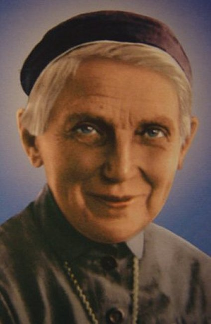

"SANTA ÚRSULA LEDÓCHOWSKA"



"DEUS dirigiu sua vida e suscitou o nascimento da Congregação das Irmãs Ursulinas do Sagrado Coração de Jesus Agonizante"

=ÍNDICE=
 -
ILUMINADA PELO ESPÍRITO DIVINO
-
ILUMINADA PELO ESPÍRITO DIVINO
-
MISSÃO EXISTENCIAL REALIZADA DIGNAMENTE
-
FOTOGRAFIAS + NOTÍCIAS + E-MAIL